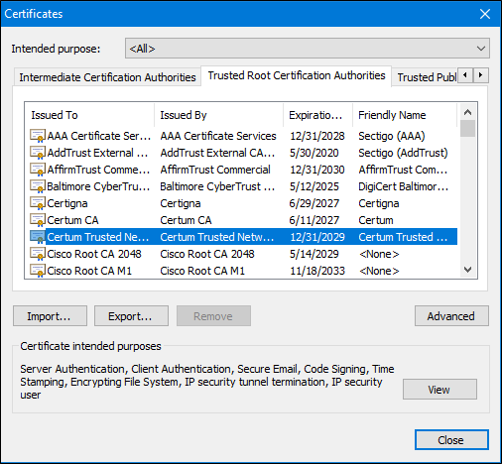

21.4.1 Administración de Claves Públicas
El tráfico de Internet se compone de tráfico entre dos participantes. Cuando se establece una conexión asimétrica entre dos hosts, estos intercambian su información de clave pública.
Un certificado SSL es un certificado digital que confirma la identidad de un dominio de sitio web. Para implementar SSL en un sitio web propio, debemos comprar un certificado SSL para nuestro dominio a un proveedor de Certificados SSL. El tercero de confianza realiza una investigación exhaustiva antes de emitir las credenciales. Después de esta investigación exhaustiva, el tercero emite credenciales (es decir, el certificado digital) que son difíciles de falsificar. Desde ese momento, todas las personas que confían en el tercero simplemente aceptan las credenciales que emite el tercero. Cuando las computadoras intentan conectarse a un sitio web a través de HTTPS, el navegador web comprueba el certificado de seguridad del sitio web y comprueba que es válido y se originó con una CA de confianza. Esto valida que la identificación del sitio web es verdadera. El certificado se guarda localmente por el navegador web y luego se utiliza en transacciones posteriores. La clave pública del sitio web se incluye en el certificado y se utiliza para verificar futuras comunicaciones entre el sitio web y el cliente.
Estos terceros de confianza proporcionan servicios similares a las agencias gubernamentales de concesión de licencias. En la figura, se muestra la analogía entre una licencia de conducir y un certificado digital.

La Infraestructura de Claves Públicas ( Public Key Infrastructure PKI) consiste en especificaciones, sistemas, y herramientas que se utilizan para crear, administrar, almacenar, distribuir y revocar certificados digitales. La Autoridad de Certificados ( Certificate Authority CA) es una organización que crea certificados digitales vinculando una clave pública a una identificación confirmada, como un sitio web o un individuo. La PKI es un sistema intrincado que está diseñado para salvaguardar las identidades digitales contra el hacking, incluso por los agentes de amenaza más sofisticados o estados nacionales.
Algunos ejemplos de CA son IDentrust, DigiCert, Sectigo, GlobalSign y GoDaddy. Estas CA pueden cobrar una tarifa por sus servicios. Let's Encrypt es una CA sin fines de lucro que ofrece certificados de forma gratuita.
21.4.2 La Infraestructura de Claves Públicas (Public Key Infrastructure PKI)
La PKI es necesaria para admitir la distribución e identificación a gran escala de claves de encriptación públicas. El marco de trabajo de la PKI permite una relación de confianza altamente escalable.
Consiste en el hardware, software, personas, políticas y los procedimientos necesarios para crear, administrar, almacenar, distribuir y revocar certificados digitales.
La figura muestra los principales elementos de la PKI.

La siguiente figura muestra cómo interoperan los elementos de la PKI:

Nota: No todos los certificados de PKI se reciben directamente de una CA. Una autoridad de registro (Registration Authority RA) es una CA secundaria y está certificada por una CA principal para emitir certificados para usos específicos.
21.4.3 El sistema de autoridades de la PKI
Muchos proveedores proporcionan servidores de CA como un servicio administrado o como un producto para usuarios finales. Algunos de estos proveedores son Symantec Group (VeriSign), Comodo, Go Daddy Group, GlobalSign y DigiCert, entre otros.
Las organizaciones también pueden implementar PKI privadas utilizando Microsoft Server u Open SSL.
Las CA, especialmente aquellas tercerizadas, emiten certificados basados en clases que determinan cuán confiable es un certificado.
La tabla proporciona una descripción de las clases. El número de clase es determinado por el nivel de rigurosidad del procedimiento al momento de verificar la identidad del titular cuando se emitió el certificado. Cuanto mayor sea el número de clase, más confiable será el certificado. Por lo tanto, un certificado de clase 5 es mucho más confiable que un certificado de una clase inferior.
| Clase | Descripción |
|---|---|
| 0 | Se utiliza con fines de pruebas en situaciones en las que no se ha realizado ninguna comprobación. |
| 1 | Utilizado por personas que requieren verificación de correo electrónico. |
| 2 | Se utiliza por organizaciones en las que se requiere demostrar la identidad. |
| 3 | Se utiliza para la firma de servidores y software. La autoridad de certificación realizó la verificación y comprobación de identidad y autoridad |
| 4 | Se utiliza para transacciones comerciales en línea entre empresas. |
| 5 | Se utiliza para organizaciones privadas o agencias de seguridad gubernamentales. |
Por ejemplo, un certificado de clase 1 podría requerir una respuesta de correo electrónico del titular para confirmar que desea inscribirse. Este tipo de confirmación es una autenticación débil del titular. En el caso de un certificado de clase 3 o 4, el futuro titular debe probar su identidad y autenticar la clave pública presentándose en persona con, al menos, dos documentos de identificación oficiales.
Algunas claves públicas de la CA están precargadas, como las que aparecen en los navegadores web. En la figura, se ven varios certificados de VeriSign que están en el almacén de certificados en el host. El navegador considerará como legítimo cualquier certificado firmado por cualquiera de las CA de la lista y confiará automáticamente.

Nota: Una empresa también puede implementar una PKI para uso interno. La PKI puede utilizarse para autenticar a los empleados que tengan acceso a la red. En este caso, la empresa es su propia CA.
21..4 El sistema de confianza de la PKI
Las PKI pueden formar distintas topologías de confianza. La más simple es la topología de PKI de raíz única
Como se ve en la figura abajo, una sola CA, llamada la CA raíz, emite todos los certificados a los usuarios finales, que suelen encontrarse dentro de la misma organización. El beneficio de este enfoque es su sencillez. Sin embargo, es difícil llevar esta estructura a un entorno grande, ya que requiere una administración estrictamente centralizada que crea un punto único de falla.
Topología de PKI de raíz única

En redes mayores, las CA de la PKI pueden vincularse con dos arquitecturas básicas:
Topologías de CA con certificación cruzada - Como se ve en la figura abajo, este es un modelo punto a punto en el que las CA individuales establecen relaciones de confianza con otras CA mediante la certificación cruzada de certificados de CA. Los usuarios de cualquiera de los dominios de CA pueden estar seguros de que pueden confiar el uno en el otro. Esto proporciona redundancia y elimina el punto único de falla.
CA con certificación cruzada

Topologías de CA jerárquicas - Como se ve en la figura abajo, la CA de máximo nivel se llama CA raíz. Puede emitir certificados a usuarios finales y a una CA secundaria. Las CA secundarias pueden crearse para respaldar diversas unidades de negocio, dominios o comunidades de confianza. La CA raíz mantiene la “comunidad de confianza” establecida, al asegurar que cada entidad de la jerarquía se ajuste a un conjunto mínimo de prácticas. Algunos beneficios de esta topología son escalabilidad y capacidad de administración aumentadas. Esta topología funciona bien en la mayoría de las organizaciones grandes. Sin embargo, puede ser difícil determinar la cadena del proceso de firma.
Las topologías jerárquica y de certificación cruzada pueden combinarse para crear una infraestructura híbrida. Un ejemplo sería cuando dos comunidades jerárquicas quieren realizar la certificación cruzada entre ellas para que los miembros de cada comunidad confíen entre sí.
CA jerárquica

21.4.5 Interoperabilidad de los diferentes proveedores de PKI
La interoperabilidad entre una PKI y sus servicios de soporte, por ejemplo el protocolo LDAP y los directorios X.500, es una preocupación porque muchos proveedores de CA han propuesto e implementado soluciones propias en lugar de esperar a que se desarrollen estándares.
Nota: LDAP y X.500 son protocolos que se utilizan para consultar un servicio de directorios, como Microsoft Active Directory, para verificar un nombre de usuario y una contraseña.
Para abordar esta preocupación sobre la interoperabilidad, la IETF publicó el Marco de trabajo de prácticas y políticas de certificación de PKI, de Internet X.509 (RFC 2527). El estándar X.509 versión 3 (X.509v3) define el formato de un certificado digital.
Consulte la figura para obtener más información sobre las aplicaciones X.509 v3. Como se ve en la figura, el formato X.509 ya se usa ampliamente en la infraestructura de Internet.
Aplicaciones X.509v3

21.4.6 Inscripción, autenticación y revocación de certificados
En el procedimiento de autenticación de CA, el primer paso es obtener una copia segura de la clave pública de la CA. Todos los sistemas que utilizan el PKI deben tener la clave pública de la CA, que se llama certificado autofirmado. La clave pública de la CA verifica todos los certificados emitidos por la CA y es vital para el correcto funcionamiento del PKI.
Nota: Sólo una CA raíz puede emitir un certificado autofirmado que sea reconocido o verificado por otras CA dentro de la PKI.
Para muchos sistemas, como los navegadores web, la distribución de los certificados de CA se maneja automáticamente. El navegador web trae preinstalado un conjunto de certificado raíz de CA públicos. Las organizaciones y sus dominios de sitios web envian sus certificados públicos a los visitantes del sitio web. Las CA y los registradores de dominios de certificados crean y distribuyen certificados privados y públicos a los clientes que compran certificados.
Un sistema de host utiliza el proceso de inscripción de certificado para inscribirse en una PKI. Para hacerlo, se obtienen los certificados de CA transmisión en banda en una red y la autenticación se realiza en transmisión fuera de banda (out-of-band OOB) utilizando el teléfono. El sistema que se inscribirá en la PKI se pone en contacto con una CA para solicitar y obtener un certificado de identidad digital para sí mismo y para obtener el certificado autofirmado de la CA. En la etapa final, se verifica la autenticidad del certificado de CA utilizando un método fuera de banda como el Sistema de Servicio Telefónico Analógico (Plain OLd Telephone System POTS), para obtener la huella digital del certificado de identidad válido de CA.
La autenticación ya no requiere la presencia del servidor de CA y cada usuario intercambia sus certificados que contienen las claves públicas.
A veces, se debe revocar el certificado. Por ejemplo, un certificado digital se puede revocar si la clave está en riesgo o si ya no es necesario.
Estos son dos de los métodos más comunes de revocación:
21.4.7 Práctica de laboratorio - Almacenes de autoridades emisoras de certificados
En esta práctica de laboratorio se cumplirán los siguientes objetivos: